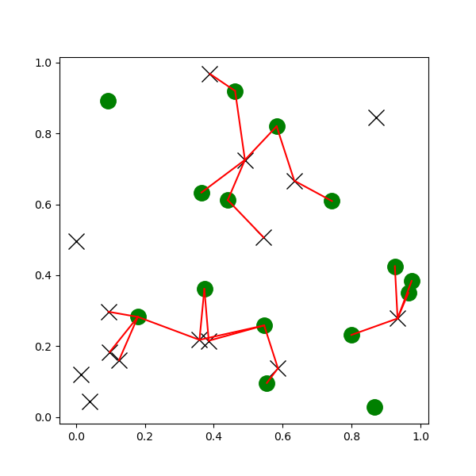

scipy.spatial
scipy.spatial module
KDTree.queryballtree
points1 = rand(15, 2)
points2 = rand(15, 2)
figure(figsize=(6, 6))
plot(points1[:, 1], points1[:, 2], "xk", markersize=14)
plot(points2[:, 1], points2[:, 2], "og", markersize=14)
kd_tree1 = spatial.KDTree(points1)
kd_tree2 = spatial.KDTree(points2)
indexes = kd_tree1.query_ball_tree(kd_tree2, r=0.2)
for i in 1:length(indexes)
for j in indexes[i]
plot([points1[i, 1], points2[j+1, 1]], [points1[i, 2], points2[j+1, 2]], "-r")
end
end